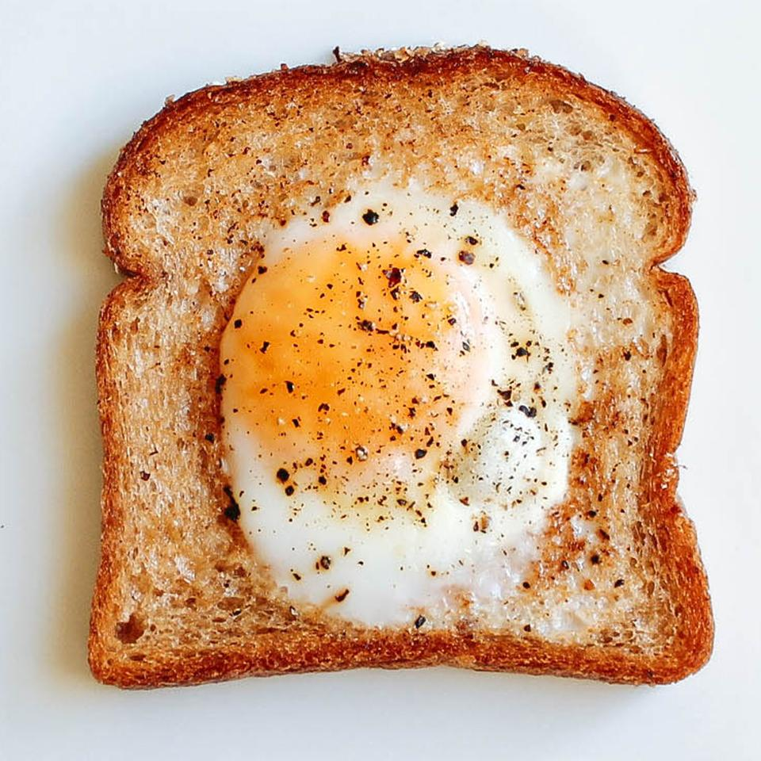

Egg in a hole

Discription
Egg in a Hole is a delicious runny yolk egg cooked in the center of piece of toast and eaten with a fork
It is a great way to enjoy an egg in a slightly different way.
Ingredients
- 1 1/2 teaspoons bacon grease
- 1 slice bread
- 1 egg
- salt and ground black pepper to taste
Steps
- Melt the bacon grease in a non-stick pan over low heat.
- Cut a 1 1/2 to 2-inch hole from the center of the bread slice; lay in the hot skillet. When the side facing down is lightly toasted, about 2 minutes, flip and crack the egg into the hole; season with salt and pepper. Continue to cook until the egg is cooked and mostly firm. Flip again and cook 1 minute more to assure doneness on both sides. Serve immediately.